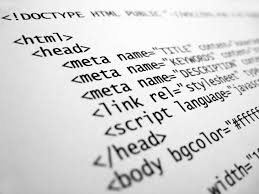

Мои Стихи
Я и html
Я очень люблю
html, код сss
Мне в душу засел.
Люблю округлять,
Блокам рамки,
Люблю верстать
Сайтикам шапки
Очень люблю я
Сайты творить,
И не могу без них я прожить..

Я танцор
И я этим горжусь
Я танцор
И я этим горжусь,
Все время в
Движении я нахожусь.
Хип-хоп направления
Я развиваю, и всех людей
Танцем удивляю. Эмоции
Страсть и чувства,
На сцене творю исскуство..
Поэты созданы
творить
Поэты,
Созданы творить,
Идею в рифме доносить,
Когда идей и рифмы нет,
То ищет вдохновение поэт.
Я вдохнавляюсь всем вокруг,
И пишу стих после долгих мук..
Люблю в фотошопе
творить
Люблю чудить,
В фотшопе творить,
Картинкам новый вид
Приносить,скучным фото
Окраску давать, и картинкам
Края обрезать,
Фотошоп - это мир
Творчества и чудес,
Вместо старой квартиры,
Будет загадочный лес..